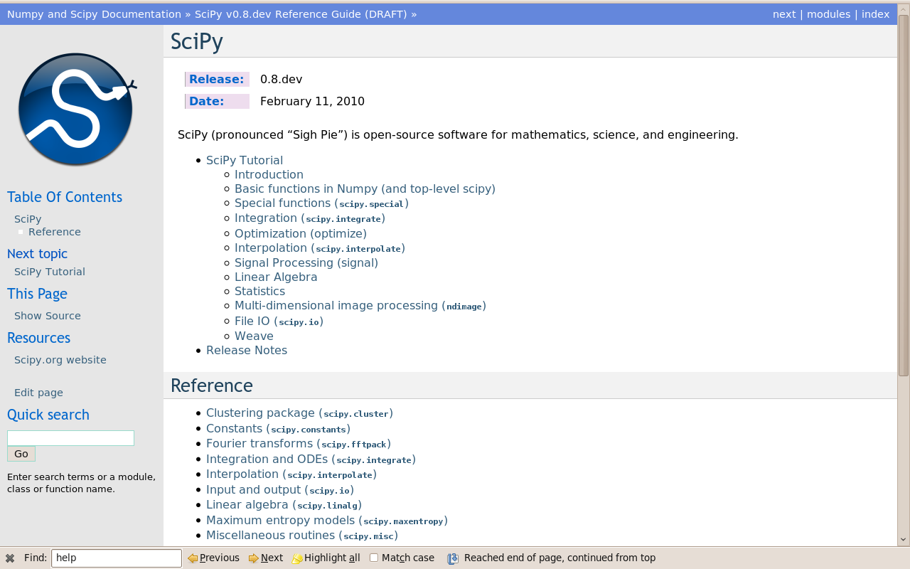
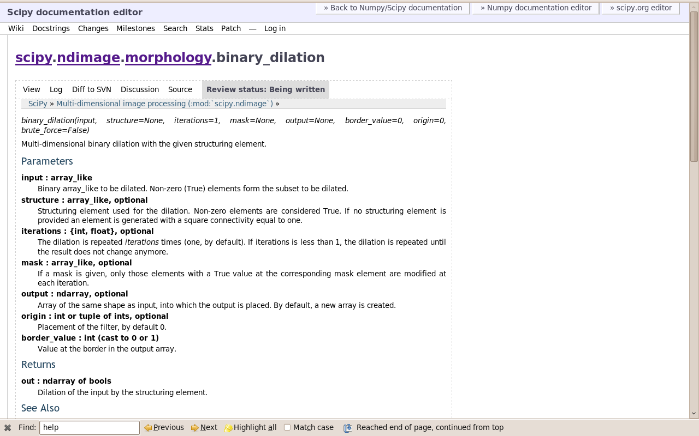
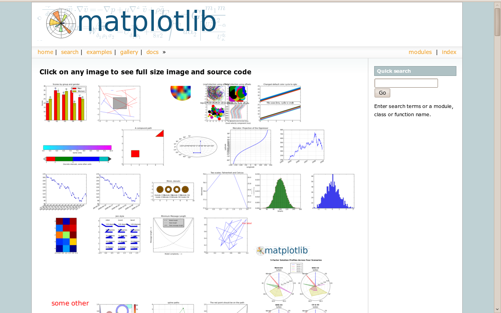

{kind=link}
{kind=link}
{kind=link}

When you’re trying to solve a problem with Python, it’s important to know how to find the best package or module to use, and how to apply it to your problem. Someone may have already written code to solve the same problem. Here are some ways to get this information:
Search the internet!
Inside the Python interpreter, the help() function prints help about an object. In IPython, you can also type the name of any object followed by a ? to access the same documentation. Only type the beginning of the function’s name and use tab completion to display the matching functions.
Numpy’s and Scipy’s documentations can be browsed online on http://docs.scipy.org/doc. The search button is quite useful inside the reference documentation of the two packages (http://docs.scipy.org/doc/numpy/reference/ and http://docs.scipy.org/doc/scipy/reference/).
Tutorials on various topics as well as the complete API with all docstrings are found on this website.
Numpy’s and Scipy’s documentation is enriched and updated on a regular basis by users on a wiki http://docs.scipy.org/numpy/. As a result, some docstrings are clearer or more detailed on the wiki, and you may want to read directly the documentation on the wiki instead of the official documentation website. Note that anyone can create an account on the wiki and write better documentation; this is an easy way to contribute to an open-source project and improve the tools you are using!
Scipy’s cookbook http://www.scipy.org/Cookbook gives recipes on many common problems frequently encountered, such as fitting data points, solving ODE, and many other example problems.
Matplotlib’s website http://matplotlib.sourceforge.net/gallery.html is a very nice gallery with a large number of plots, each of them shows both the source code and the resulting plot. This is very useful for learning by example. More standard documentation is also available.
There are two more possibilities that are accessed from the interactive environment:
In Ipython, the function %psearch searches for objects matching patterns. This is useful if, for example, one does not know the exact name of a function:
%psearch np.diag*
numpy.lookfor looks for keywords inside the docstrings of functions and modules:
numpy.lookfor('convolution')
numpy.lookfor('remove', module='os')
If everything listed above fails, don’t despair! There are several places where there are Python experts who can help with your problem.
- Stack Overflow is an extremely useful resources for both Python and general programming questions.
- Official mailing lists: the Numpy discussion (numpy-discussion@scipy.org) for questions all about numpy arrays, manipulating them, indexing questions and so on, and the SciPy Users List (scipy-user@scipy.org) for questions about scientific computing with Python, high-level data processing, in particular with the Scipy package. Sign up to use these at http://www.scipy.org/Mailing_Lists.
- The matplotlib users list, matplotlib-users@lists.sourceforge.net, is good place to ask about using matplotlib.
There are some very useful IPython-specific abilities that we’ll look at more closely here:
You can look at the source code for a function or class by typing the function/class name followed by ??. Be aware that this only works for functions written in Python, not compiled libraries.
There are many ‘magic’ functions that are available in IPython. We have already been using some of these: run, cd, ls and psearch are all magic functions. You can see a quick description of all such functions using the %quickref function. Some other very useful ones are:
- history
- whos
- timeit
| author: | Neil Crighton (adapted from a version by Emmanuelle Gouillart) |
|---|